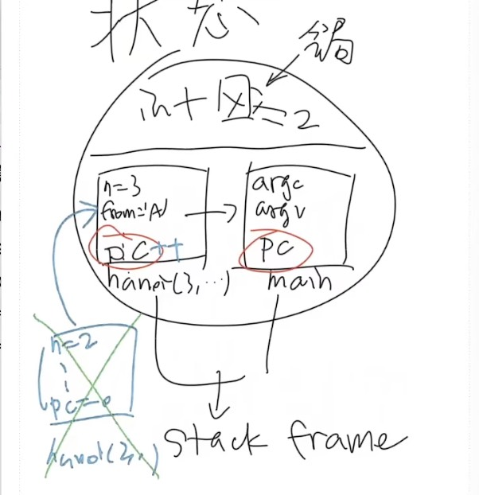
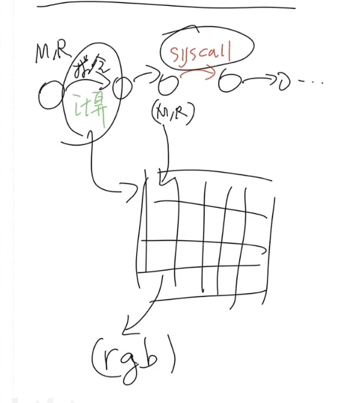

操作系统上的程序
Overview
复习：操作系统
- 应用视角 (设计): 一组对象 (进程/文件/...) + API
- 硬件视角 (实现): 一个 C 程序
本次课回答的问题
- Q: 到底什么是 “程序”？
本次课主要内容
- 程序的状态机模型 (和编译器)
- 操作系统上的 {最小/一般/图形} 程序
收获
1、程序执行的第一条指令在哪里
等价问法：
- 一个普通的、人畜无害的 Hello World C 程序执行的第一条指令在哪里？
- 二进制程序状态机的初始状态是什么？
main 的第一条指令 ❌，libc 的 _start ❌
打开 gdb a.out，执行 starti，第一条指令位于 /lib64/ld-linux-x86-64.so.2（是linux下面的动态链接库）
再输入 info proc mappings（显示正在运行的进程中映射的内存区域的列表），地址空间里面的就是 info proc mappings 这些东西
main() 之前发生了什么？
ld-linux-x86-64.so （叫做加载器）加载了 libc
之后 libc 完成了自己的初始化，为程序状态机赋予了初始状态
main 执行之前、执行中、执行后，发生了哪些操作系统 API 调用？
strace ./hello-goodbye
2、本质上，所有的程序和 Hello World 类似
程序 = 状态机 = 计算 → syscall → 计算 →
- 被操作系统加载
- 通过另一个进程执行 execve 设置为初始状态
- 状态机执行
- 进程管理：fork, execve, exit, ...
- 文件/设备管理：open, close, read, write, ...
- 存储管理：mmap, brk, ...
- 直到 _exit (exit_group) 退出
3、到底什么是“程序”
- 程序 = 状态机
- 源代码 S 视角: 状态迁移 = 执行语句
- 二进制代码 C 视角: 状态迁移 = 执行指令
- 源代码和二进制之间通过编译器 C=compile(S)
- 应用视角的操作系统
- 就是一条 syscall 指令
- 计算机系统不存在玄学；一切都建立在确定的机制上
- 理解操作系统的重要工具：gcc, binutils, gdb, strace
一、数字电路与状态机
1、数字电路与状态机
数字逻辑电路
- 状态 = 寄存器保存的值 (flip-flop)
- 初始状态 = RESET (implementation dependent)
- 迁移 = 组合逻辑电路计算寄存器下一周期的值
2、数字逻辑电路：模拟器
#include <stdio.h>
#include <unistd.h>
#define REGS_FOREACH(_) _(X) _(Y)
#define RUN_LOGIC X1 = !X && Y; \
Y1 = !X && !Y;
#define DEFINE(X) static int X, X##1;
#define UPDATE(X) X = X##1;
#define PRINT(X) printf(#X " = %d; ", X);
int main() {
REGS_FOREACH(DEFINE);
while (1) { // clock
RUN_LOGIC;
REGS_FOREACH(PRINT);
REGS_FOREACH(UPDATE);
putchar('\n'); sleep(1);
}
}
预编译的宏展开：gcc -E a.c
int main() {
static int X, X1; static int Y, Y1;;
while (1) {
X1 = !X && Y; Y1 = !X && !Y;;
printf("X" " = %d; ", X); printf("Y" " = %d; ", Y);;
X = X1; Y = Y1;;
putchar('\n'); sleep(1);
}
}
3、更完整的实现：数码管显示
输出数码管的配置信号
- logisim.c
- 会编程，你就拥有全世界！
- seven-seg.py
- 同样的方式可以模拟任何数字系统
- 当然，也包括计算机系统
后端：logisim.c
#include <stdio.h>
#include <unistd.h>
#define REGS_FOREACH(_) _(X) _(Y)
#define OUTS_FOREACH(_) _(A) _(B) _(C) _(D) _(E) _(F) _(G)
#define RUN_LOGIC X1 = !X && Y; \
Y1 = !X && !Y; \
A = (!X && !Y) || (X && !Y); \
B = 1; \
C = (!X && !Y) || (!X && Y); \
D = (!X && !Y) || (X && !Y); \
E = (!X && !Y) || (X && !Y); \
F = (!X && !Y); \
G = (X && !Y);
#define DEFINE(X) static int X, X##1;
#define UPDATE(X) X = X##1;
#define PRINT(X) printf(#X " = %d; ", X);
int main() {
REGS_FOREACH(DEFINE);
OUTS_FOREACH(DEFINE);
while (1) { // clock
RUN_LOGIC;
OUTS_FOREACH(PRINT);
REGS_FOREACH(UPDATE);
putchar('\n');
fflush(stdout);
sleep(1);
}
}
前端：seven-seg.py
import fileinput
TEMPLATE = '''
\033[2J\033[1;1f
AAAAAAAAA
FF BB
FF BB
FF BB
FF BB
GGGGGGGGGG
EE CC
EE CC
EE CC
EE CC
DDDDDDDDD
'''
BLOCK = {
0: '\033[37m░\033[0m', # STFW: ANSI Escape Code
1: '\033[31m█\033[0m',
}
VARS = 'ABCDEFG'
for v in VARS:
globals()[v] = 0
stdin = fileinput.input()
while True:
exec(stdin.readline())
pic = TEMPLATE
for v in VARS:
pic = pic.replace(v, BLOCK[globals()[v]]) # 'A' -> BLOCK[A], ...
print(pic)
执行下：./a.out | python seven-seg.py
你还体验了 UNIX 哲学
- Make each program do one thing well
- Expect the output of every program to become the input to another
二、什么是程序 (源代码视角)
1、什么是程序？
你需要《程序设计语言的形式语义》
- by 梁红瑾 🎩
- λ-calculus, operational semantics, Hoare logic, separation logic
- 入围 “你在南京大学上过最牛的课是什么？” 知乎高票答案
- ~~当然，我也厚颜无耻地入围了~~
2、程序就是状态机
程序就是状态机 (你在 gdb 里看到的)
- 试试程序吧 hanoi-r.c
汉诺塔程序，哈哈，虐人啦
hanoi-r.c
void hanoi(int n, char from, char to, char via) {
if (n == 1) printf("%c -> %c\n", from, to);
else {
hanoi(n - 1, from, via, to);
hanoi(1, from, to, via);
hanoi(n - 1, via, to, from);
}
return;
}
main.c
#include 的形式语义就是复制粘贴
C 程序的状态机模型 (语义，semantics)
- 状态 = 堆 + 栈
- 初始状态 =
main的第一条语句 - 迁移 = 执行一条简单语句
c语言程序是什么？
对于c语言的程序而言，c语言的程序由很多的栈帧（stack frame）组成，每次函数调用都会产生一个新的栈帧
main 有自己的参数 argc、argv，局部变量，最重要的是程序计数器 pc，
pc 直观的看就是 gdb 中显示的条子
函数调用是什么？
创建一个新的状态，call 另一个函数，创建一个新的栈帧
发起调用的函数的栈帧中的 pc++；被调用的函数的栈帧中的 pc=0
函数调用的返回是什么？
把顶上的栈帧删掉，发起调用的函数的栈帧中的 pc--

(这还只是 “粗浅” 的理解)
- Talk is cheap. Show me the code. (Linus Torvalds): 任何真正的理解都应该落到可以执行的代码
3、C 程序的语义
C 程序的状态机模型 (语义，semantics)
- 状态 = stack frame 的列表 (每个 frame 有 PC) + 全局变量
- 初始状态 = main(argc, argv), 全局变量初始化
- 迁移 = 执行 top stack frame PC 的语句; PC++
- 函数调用 = push frame (frame.PC = 入口)
- 函数返回 = pop frame
应用：将任何递归程序就地转为非递归
- 汉诺塔难不倒你 hanoi-nr.c
- A → B, B → A 的也难不倒你
- 还是一样的
call()，但放入不同的Frame
- 还是一样的
typedef struct {
int pc, n;
char from, to, via;
} Frame;
#define call(...) ({ *(++top) = (Frame) { .pc = 0, __VA_ARGS__ }; })
#define ret() ({ top--; })
#define goto(loc) ({ f->pc = (loc) - 1; })
void hanoi(int n, char from, char to, char via) {
Frame stk[64], *top = stk - 1;
call(n, from, to, via);
for (Frame *f; (f = top) >= stk; f->pc++) {
switch (f->pc) {
case 0: if (f->n == 1) { printf("%c -> %c\n", f->from, f->to); goto(4); } break;
case 1: call(f->n - 1, f->from, f->via, f->to); break;
case 2: call( 1, f->from, f->to, f->via); break;
case 3: call(f->n - 1, f->via, f->to, f->from); break;
case 4: ret(); break;
default: assert(0);
}
}
}
#include <stdio.h>
#include <assert.h>
#include "hanoi-nr.c"
int main() {
hanoi(3, 'A', 'B', 'c');
}
三、什么是程序 (二进制代码视角)
1、什么是 (二进制) 程序？
还是状态机
- 状态 = 内存 M + 寄存器 R
- 初始状态 = (稍后回答)
- 迁移 = 执行一条指令
- 我们花了一整个《计算机系统基础》解释这件事
- gdb 同样可以观察状态和执行
操作系统上的程序
- 所有的指令都只能计算
- deterministic: mov, add, sub, call, ...
- non-deterministic: rdrand, ...
- 但这些指令甚至都无法使程序停下来 (NEMU: 加条
trap指令)
2、一条特殊的指令 syscall
调用操作系统 syscall
- 把 (M,R) 完全交给操作系统，任其修改
- 一个有趣的问题：如果程序不打算完全信任操作系统？
- 实现与操作系统中的其他对象交互
- 读写文件/操作系统状态 (例如把文件内容写入 M)
- 改变进程 (运行中状态机) 的状态，例如创建进程/销毁自己

程序 = 计算 + syscall
- 问题：怎么构造一个最小的 Hello, World？
3、构造最小的 Hello, World
gcc 编译出来的文件不满足 “最小”
gcc --verbose main.c可以查看所有编译选项 (真不少)- printf 变成了 puts@plt
gcc -static a.c会复制 libc，编译出来的二进制很大objdump -d a.out | less
4、直接硬来？
强行编译 + 链接：gcc -c + ld
- 直接用 ld 链接失败
- ld 不知道怎么链接库函数……
执行：
gcc -c a.c（compile only）objdump -d a.o（汇编目标文件的特定机器码段）
a.o: file format mach-o 64-bit x86-64
Disassembly of section __TEXT,__text:
0000000000000000 <_main>:
0: 55 pushq %rbp
1: 48 89 e5 movq %rsp, %rbp
4: 48 8d 3d 0b 00 00 00 leaq 11(%rip), %rdi ## 0x16 <_main+0x16>
b: b0 00 movb $0, %al
d: e8 00 00 00 00 callq 0x12 <_main+0x12>
12: 31 c0 xorl %eax, %eax
14: 5d popq %rbp
15: c3 retq
gcc -c a.c && objdump -d a.o && ld a.o 不行
gcc -c a.c && objdump -d a.o && ld a.o
- 空的 main 函数倒是可以
- 链接时得到奇怪的警告 (可以定义成
_start避免警告) - 但 Segmentation Fault 了……（即段错误，一般都是出现了非法的地址写法操作导致的）
- 链接时得到奇怪的警告 (可以定义成
问题：为什么会 Segmentation Fault？
- 当然是观察程序 (状态机) 的执行了
- 初学者必须克服的恐惧：STFW/RTFM (M 非常有用)
starti可以帮助我们从第一条指令开始执行程序- gdb 可以在两种状态机视角之间切换 (
layout)
- gdb 可以在两种状态机视角之间切换 (
答案是：程序状态机的初始状态不可返回 void _start
5、解决异常退出
有办法让状态机 “停下来” 吗？
- 纯 “计算” 的状态机：不行
- 要么死循环，要么 undefined behavior
解决办法：syscall
#include <stdio.h>
#include <unistd.h>
#include <sys/syscall.h>
int main() {
syscall(SYS_exit, 42);
}
gcc a.c && ./a.out; echo $status 输出 42
- 调试代码：syscall 的实现在哪里？
- 坏消息：在 libc 里，不方便直接链接
- 好消息：代码很短，而且似乎看懂了
6、Hello, World 的汇编实现
#include <sys/syscall.h>
.globl _start
_start:
movq $SYS_write, %rax # write(
movq $1, %rdi # fd=1,
movq $st, %rsi # buf=st,
movq $(ed - st), %rdx # count=ed-st
syscall # );
movq $SYS_exit, %rax # exit(
movq $1, %rdi # status=1
syscall # );
st:
.ascii "\033[01;31mHello, OS World\033[0m\n"
ed:
Note: gcc 支持对汇编代码的预编译 (还会定义 __ASSEMBLER__ 宏)
~~我是从哪里获得这些黑科技代码的？？？~~
- syscall (2), syscalls (2)
- The Friendly Manual 才是最靠谱的信息来源
man syscall
- The Friendly Manual 才是最靠谱的信息来源
回顾：状态机视角的程序
- 程序 = 计算 → syscall → 计算 → ...
7、彩蛋：ANSI Escape Code
为什么 Hello World 有颜色？？
特殊编码的字符实现终端控制
- vi.c from busybox
telnet towel.blinkenlights.nl(电影；Ctrl-] and q 退出)dialog --msgbox 'Hello, OS World!' 8 32ssh sshtron.zachlatta.com(网络游戏)- 所以编程可以从一开始就不那么枯燥
- 看似复杂，实际简单明了
四、如何在程序的两个视角之间切换？
1、如何在程序的两个视角之间切换？
”状态机” 顺便解决了一个非常重要的基本问题：
什么是编译器？？？
编译器：源代码 S (状态机) → 二进制代码 C (状态机) C=compile(S)
gcc -O2 -c a.c && objdump -d a.o
什么叫正确的编译？
在 c 代码状态机里面所有不可优化都被正确的翻译到汇编上
除此之外，所有的优化编译器都可以做
编译 (优化) 的正确性 (Soundness):
- S 与 C 的可观测行为严格一致
- system calls; volatile variable loads/stores; termination
- Trivially 正确 (但低效) 的实现
- 解释执行/直接翻译 S 的语义
2、现代 (与未来的) 编译优化
在保证观测一致性 (sound) 的前提下改写代码 (rewriting)
- Inline assembly 也可以参与优化
- 其他优化可能会跨过不带 barrier 的
asm volatile
- 其他优化可能会跨过不带 barrier 的
- Eventual memory consistency（最终的内存一致性），不能跨过 barrier
asm volatile ("nop" : : "r"(x) : "memory");__sync_synchronize()内存 barrier，非常强
- Call to external CU = write back visible memory
- talk is cheap, show me the code!
$ gcc -O2 -c a.c && objdump -d a.o
a.o: file format elf64-x86-64
Disassembly of section .text:
0000000000000000 <foo>:
0: f3 0f 1e fa endbr64
4: 83 05 00 00 00 00 02 addl $0x2,0x0(%rip) # b <foo+0xb>
b: c3 retq
会出现个现象
extern int g;
void foo(int x) {
g++;
// asm volatile ("nop" : : "r"(x)); // 这一行不可优化，但编译器优化穿透了它
asm volatile ("nop" : : "r"(x) : "memory"); // compiler barrier
// __sync_synchronize();
g++;
}
$ gcc -O2 -c a.c && objdump -d a.o
a.o: file format elf64-x86-64
Disassembly of section .text:
0000000000000000 <foo>:
0: f3 0f 1e fa endbr64
4: 90 nop
5: 83 05 00 00 00 00 02 addl $0x2,0x0(%rip) # c <foo+0xc>
c: c3 retq
Eventual memory consistency:
Disassembly of section .text:
0000000000000000 <foo>:
0: f3 0f 1e fa endbr64
4: 83 05 00 00 00 00 01 addl $0x1,0x0(%rip) # b <foo+0xb>
b: 90 nop
c: 83 05 00 00 00 00 01 addl $0x1,0x0(%rip) # 13 <foo+0x13>
13: c3 retq
这给了我们很多想象的空间
- Semantic-based compilation (synthesis)，基于语义的编译（综合）
- AI-based rewriting，基于人工智能的重写
- Fine-grained semantics & system call fusion，细粒度语义和系统调用融合
3、进入 PL(program language) 的领域
PL 领域 (的很多人) 有一种倾向：用数学化的语言定义和理解一切 (all about semantics)
- ~~所以你看一眼 paper 就觉得自己瞎了~~
- 但背后的直觉依然是 system/software 的
- (我们是人，不是无情的数学机器 😂)
- 溜了溜了，回到 system 的世界
Further readings
- An executable formal semantics of C with applications (POPL'12)
- CompCert C verified compiler and a paper (POPL'06, Most Influential Paper Award 🏅)
- Copy-and-patch compilation (OOPSLA'21, Distinguished Paper 🏅)
五、操作系统中的一般程序
1、操作系统中的一般程序
和 minimal.S 没有本质区别：程序 = 计算 → syscall → ...
汇编和 c 没有界限，同一个世界的不同维度
操作系统收编了所有的硬件/软件资源
- 只能用操作系统允许的方式访问操作系统中的对象
- 从而实现操作系统的 “霸主” 地位
- 例子：tryopen.c
- 这是为 “管理多个状态机” 所必须的
- 不能打架，谁有权限就给他
#include <stdio.h>
#include <fcntl.h>
#include <unistd.h>
void try_open(const char *fname) {
int fd = open(fname, O_RDWR);
printf("open(\"%s\") returns %d\n", fname, fd);
if (fd < 0) {
perror(" FAIL");
} else {
printf(" SUCCESS!\n");
close(fd);
}
}
int main() {
try_open("/something/not/exist");
try_open("/dev/sda"); // hard drive
}
2、(二进制) 程序也是操作系统中的对象
可执行文件
- 与大家日常使用的文件 (a.c, README.txt) 没有本质区别
- 操作系统提供 API 打开、读取、改写 (都需要相应的权限)
查看可执行文件
vim,cat,xxd都可以直接查看可执行文件vim中二进制的部分无法 “阅读”，但可以看到字符串常量- 使用
xxd可以看到文件以"\x7f" "ELF"开头 - vscode 有 binary editor 插件
3、系统中常见的应用程序
Core Utilities (coreutils)，系统中核心的程序 wc、cat、echo 等
- standard programs for text and file manipulation
- 系统中安装的是 GNU Coreutils 有较小的替代品 busybox
系统/工具程序
- bash, binutils, apt, ip, ssh, vim, tmux, jdk, python, ...
- 这些工具的原理都不复杂 (例如 apt 其实只是 dpkg 的壳)
- Ubuntu Packages (和 apt-file 工具) 支持文件名检索
- 例子：找不到
SDL2/SDL.h时...
- 例子：找不到
其他各种应用程序
- 浏览器、音乐播放器……
4、操作系统中的程序：Dark Side
1）程序执行的第一条指令在哪里
杀人的面试题 (1)：一个普通的、人畜无害的 Hello World C 程序执行的第一条指令在哪里？
等价问法
- “二进制程序状态机的初始状态是什么？”
main的第一条指令 ❌libc的_start❌
问 gdb 吧
info proc {mappings,...}- 打印进程内存
$ gdb a.out
(gdb) starti
Starting program: /root/demo/a.out
Program stopped.
0x00007ffff7fd0100 in ?? () from /lib64/ld-linux-x86-64.so.2
(gdb) info proc mappings
process 617677
Mapped address spaces:
Start Addr End Addr Size Offset objfile
0x555555554000 0x555555555000 0x1000 0x0 /root/demo/a.out
0x555555555000 0x555555556000 0x1000 0x1000 /root/demo/a.out
0x555555556000 0x555555557000 0x1000 0x2000 /root/demo/a.out
0x555555557000 0x555555559000 0x2000 0x2000 /root/demo/a.out
0x7ffff7fcb000 0x7ffff7fce000 0x3000 0x0 [vvar]
0x7ffff7fce000 0x7ffff7fcf000 0x1000 0x0 [vdso]
0x7ffff7fcf000 0x7ffff7fd0000 0x1000 0x0 /usr/lib/x86_64-linux-gnu/ld-2.31.so
0x7ffff7fd0000 0x7ffff7ff3000 0x23000 0x1000 /usr/lib/x86_64-linux-gnu/ld-2.31.so
0x7ffff7ff3000 0x7ffff7ffb000 0x8000 0x24000 /usr/lib/x86_64-linux-gnu/ld-2.31.so
0x7ffff7ffc000 0x7ffff7ffe000 0x2000 0x2c000 /usr/lib/x86_64-linux-gnu/ld-2.31.so
0x7ffff7ffe000 0x7ffff7fff000 0x1000 0x0
0x7ffffffde000 0x7ffffffff000 0x21000 0x0 [stack]
0xffffffffff600000 0xffffffffff601000 0x1000 0x0 [vsyscall]
答案是：
第一条指令位于 /lib64/ld-linux-x86-64.so.2，地址空间里面的就是 info proc mappings 这些东西
2）main() 之前发生了什么？
ld-linux-x86-64.so （叫做加载器）加载了 libc
- 之后 libc 完成了自己的初始化，为程序状态机赋予了初始状态
- RTFM: libc startup on Hurd
main()的开始/结束并不是整个程序的开始/结束- 例子：hello-goodbye.c
#include <stdio.h>
__attribute__((constructor)) void hello() {
printf("Hello, World\n"); // main函数之前打印
}
// See also: atexit(3)
__attribute__((destructor)) void goodbye() {
printf("Goodbye, Cruel OS World!\n"); // main函数之后打印
}
int main() {
}
谁规定是 ld-linux-x86-64.so，而不是 rtfm.so？
- readelf 告诉你答案
- (计算机系统不存在玄学；一切都建立在确定的机制上)
- 回顾
gcc --verbose
- 回顾
老师在这里 hack 了二进制，把 ld-linux-x86-64.so 改掉成 rtfm.so
然后他翻车了，第二次才改对，执行了下成功，starti 显示为 /lib64/rtfm.so
3）main 执行之前、执行中、执行后，发生了哪些操作系统 API 调用？
呃……
- (计算机系统不存在玄学；一切都建立在确定的机制上)
- 所以你应该有一个强烈的信念：这个问题是可以回答的
往下看
5、打开程序的执行：Trace (踪迹)
In general, trace refers to the process of following anythingfrom the beginning to the end. For example, the
traceroutecommand follows each of the network hops as your computer connects to another computer.
这门课中很重要的工具：strace，可以看到程序执行的所有系统调用
- system call trace
- 理解程序运行时使用的系统调用
- demo:
strace ./hello-goodbye - 在这门课中，你能理解 strace 的输出并在你自己的操作系统里实现相当一部分系统调用 (mmap, execve, ...)
- demo:
$ strace ./a.out
execve("./a.out", ["./a.out"], 0x7ffc47ef90f0 /* 22 vars */) = 0
brk(NULL) = 0x55aefc40d000
arch_prctl(0x3001 /* ARCH_??? */, 0x7ffe32e03e00) = -1 EINVAL (Invalid argument)
access("/etc/ld.so.preload", R_OK) = -1 ENOENT (No such file or directory)
openat(AT_FDCWD, "/etc/ld.so.cache", O_RDONLY|O_CLOEXEC) = 3
fstat(3, {st_mode=S_IFREG|0644, st_size=28848, ...}) = 0
mmap(NULL, 28848, PROT_READ, MAP_PRIVATE, 3, 0) = 0x7f5dea37b000
close(3) = 0
openat(AT_FDCWD, "/lib/x86_64-linux-gnu/libc.so.6", O_RDONLY|O_CLOEXEC) = 3
read(3, "\177ELF\2\1\1\3\0\0\0\0\0\0\0\0\3\0>\0\1\0\0\0\360A\2\0\0\0\0\0"..., 832) = 832
pread64(3, "\6\0\0\0\4\0\0\0@\0\0\0\0\0\0\0@\0\0\0\0\0\0\0@\0\0\0\0\0\0\0"..., 784, 64) = 784
pread64(3, "\4\0\0\0\20\0\0\0\5\0\0\0GNU\0\2\0\0\300\4\0\0\0\3\0\0\0\0\0\0\0", 32, 848) = 32
pread64(3, "\4\0\0\0\24\0\0\0\3\0\0\0GNU\0\237\333t\347\262\27\320l\223\27*\202C\370T\177"..., 68, 880) = 68
fstat(3, {st_mode=S_IFREG|0755, st_size=2029560, ...}) = 0
mmap(NULL, 8192, PROT_READ|PROT_WRITE, MAP_PRIVATE|MAP_ANONYMOUS, -1, 0) = 0x7f5dea379000
pread64(3, "\6\0\0\0\4\0\0\0@\0\0\0\0\0\0\0@\0\0\0\0\0\0\0@\0\0\0\0\0\0\0"..., 784, 64) = 784
pread64(3, "\4\0\0\0\20\0\0\0\5\0\0\0GNU\0\2\0\0\300\4\0\0\0\3\0\0\0\0\0\0\0", 32, 848) = 32
pread64(3, "\4\0\0\0\24\0\0\0\3\0\0\0GNU\0\237\333t\347\262\27\320l\223\27*\202C\370T\177"..., 68, 880) = 68
mmap(NULL, 2037344, PROT_READ, MAP_PRIVATE|MAP_DENYWRITE, 3, 0) = 0x7f5dea187000
mmap(0x7f5dea1a9000, 1540096, PROT_READ|PROT_EXEC, MAP_PRIVATE|MAP_FIXED|MAP_DENYWRITE, 3, 0x22000) = 0x7f5dea1a9000
mmap(0x7f5dea321000, 319488, PROT_READ, MAP_PRIVATE|MAP_FIXED|MAP_DENYWRITE, 3, 0x19a000) = 0x7f5dea321000
mmap(0x7f5dea36f000, 24576, PROT_READ|PROT_WRITE, MAP_PRIVATE|MAP_FIXED|MAP_DENYWRITE, 3, 0x1e7000) = 0x7f5dea36f000
mmap(0x7f5dea375000, 13920, PROT_READ|PROT_WRITE, MAP_PRIVATE|MAP_FIXED|MAP_ANONYMOUS, -1, 0) = 0x7f5dea375000
close(3) = 0
arch_prctl(ARCH_SET_FS, 0x7f5dea37a540) = 0
mprotect(0x7f5dea36f000, 16384, PROT_READ) = 0
mprotect(0x55aefa580000, 4096, PROT_READ) = 0
mprotect(0x7f5dea3b0000, 4096, PROT_READ) = 0
munmap(0x7f5dea37b000, 28848) = 0
fstat(1, {st_mode=S_IFCHR|0600, st_rdev=makedev(0x88, 0), ...}) = 0
brk(NULL) = 0x55aefc40d000
brk(0x55aefc42e000) = 0x55aefc42e000
write(1, "Hello, World\n", 13Hello, World
) = 13
write(1, "Goodbye, Cruel OS World!\n", 25Goodbye, Cruel OS World!
) = 25
exit_group(0) = ?
+++ exited with 0 +++
6、本质上，所有的程序和 Hello World 类似
程序 = 状态机 = 计算 → syscall → 计算 →
- 被操作系统加载
- 通过另一个进程执行 execve 设置为初始状态
- 状态机执行
- 进程管理：fork, execve, exit, ...
- 文件/设备管理：open, close, read, write, ...
- 存储管理：mmap, brk, ...
- 直到 _exit (exit_group) 退出
(初学者对这一点会感到有一点惊讶)
- 说好的浏览器、游戏、杀毒软件、病毒呢？都是这些 API 吗？
7、Yes! - 这些 API 就是操作系统的全部
编译器 (gcc)，代表其他工具程序
- 主要的系统调用：execve, read, write
strace -f gcc a.c(gcc 会启动其他进程)- 可以管道给编辑器
vim -，如strace -f gcc a.c |& vim - - 编辑器里还可以
%!grep(细节/技巧)，如:%! grep execve对 vim 的 buffer 执行命令行，然后替换 buffer :set nowrap，设置不自动换行，只看到几个execve:%! grep -v ENOENT，将不想看到的行删掉:%s/, /\r /g，把逗号+空格，换成换行符
- 可以管道给编辑器
execve("/usr/bin/gcc"
["gcc"
"a.c"]
0x7ffc96091cf0 /* 22 vars */) = 0
[pid 617802] execve("/usr/lib/gcc/x86_64-linux-gnu/9/cc1"
["/usr/lib/gcc/x86_64-linux-gnu/9/"...
"-quiet"
"-imultiarch"
"x86_64-linux-gnu"
"a.c"
"-quiet"
"-dumpbase"
"a.c"
"-mtune=generic"
...
[pid 617803] execve("/usr/bin/as" # 调用汇编器输出汇编代码
["as"
"--64"
"-o"
"/tmp/ccdciNxn.o"
"/tmp/cck3Gxuq.s"]
0x948610 /* 27 vars */ <unfinished ...>
此时此刻，操作系统没有任何神秘的地方
图形界面程序 (xedit)，代表其他图形界面程序 (例如 vscode)
-
主要的系统调用：poll, recvmsg, writev
-
strace xedit- 图形界面程序和 X-Window 服务器按照 X11 协议通信
- 虚拟机中的 xedit 将 X11 命令通过 ssh (X11 forwarding) 转发到 Host
8、各式各样的应用程序
都在操作系统 API (syscall) 和操作系统中的对象上构建
- 窗口管理器
- 管理设备和屏幕 (read/write/mmap)
- 进程间通信 (send, recv)
- 任务管理器
- 访问操作系统提供的进程对象 (readdir/read)
- 参考 gdb 里的
info proc *
- 杀毒软件
- 文件静态扫描 (read)
- 主动防御 (ptrace)
- 其他更复杂的安全机制……
总结
本次课回答的问题
- Q: 到底什么是 “程序”？
Take-away message
- 程序 = 状态机
- 源代码 S: 状态迁移 = 执行语句
- 二进制代码 C: 状态迁移 = 执行指令
- 编译器 C=compile(S)
- 应用视角的操作系统
- 就是一条 syscall 指令
- 计算机系统不存在玄学；一切都建立在确定的机制上
- 理解操作系统的重要工具：gcc, binutils, gdb, strace